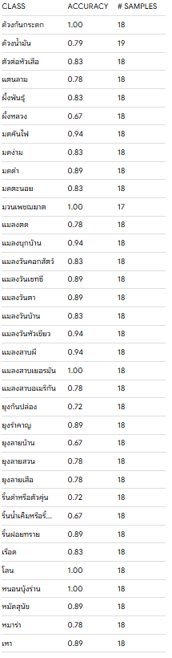
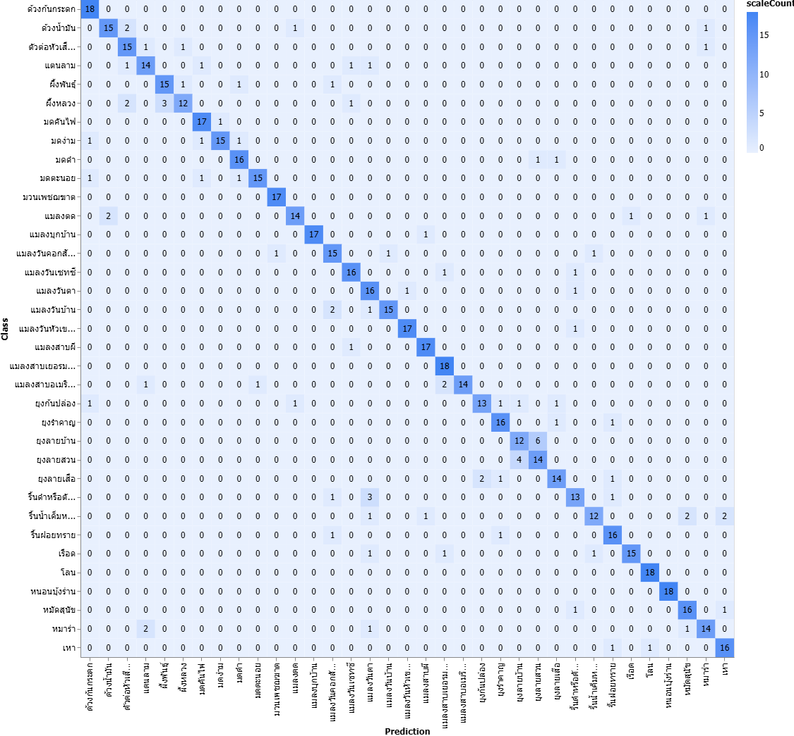

เว็บแอปพลิเคชั่นตรวจสอบแมลงอันตราย
Source Code
สามารถดูซอร์สโค้ดได้ที่
GitHub
หลักการทำงาน
เว็บแอปพลิเคชั่นตรวจสอบแมลงอันตรายใช้ใช้เทคโนโลยีปัญญาประดิษฐ์
(Artificial Intelligence: AI) ในการวิเคราะห์รูปภาพของแมลงที่ผู้ใช้
อัพโหลดขึ้นมา
โดยโมเดลที่ใช้ใช้เป็นโมเดล MobileNetV2
ที่ผ่านการปรับแต่งและฝึกฝนมาเพื่อให้สามารถจำแนกชนิดของแมลงอันตรายได้
โดยโมเดลที่ใช้ในการวิเคราะห์นี้ถูกฝึกฝนด้วยข้อมูลรูปภาพของแมลงอันตราย110-130รูปต่อชนิด
จากฐานข้อมูลแมลงอันตรายที่มีการจัดเก็บไว้
ซึ่งอาจทำให้มีโอกาสความผิดพลาดในการตรวจสอบชนิดแมลงอันตรายได้ถึง25%
ดังนั้นผลการตรวจสอบที่ได้จากเว็บแอปพลิเคชั่นนี้จึงควรนำไปใช้เป็นข้อมูลประกอบการตัดสินใจเท่านั้น
ความแม่นยำ
โมเดลที่ใช้ในเว็บแอปพลิเคชั่นนี้มีความแม่นยำในการทดสอบที่ประมาณ 82%
ซึ่งหมายความว่าในทุกๆ 100 รูปภาพที่ทำการทดสอบ
โมเดลจะสามารถทำนายชนิดของแมลงอันตรายได้ถูกต้องประมาณ 82 รูปภาพ
อย่างไรก็ตาม ความแม่นยำนี้อาจแตกต่างไปตามลักษณะของรูปภาพที่ถูกอัพโหลด
เช่น มุมของภาพ, แสงสว่าง, และพื้นหลังของรูปภาพ
ดังนั้น ผู้ใช้ควรใช้ผลการทำนายเป็นข้อมูลประกอบการตัดสินใจเท่านั้น
โดยคำนวนจากการทดสอบโมเดลด้วยข้อมูลรูปภาพที่ไม่ได้ใช้ในการฝึกฝนโมเดล(รูปที่
AI ไม่เคยเห็นมาก่อน) ซึ่งมีข้อมูลรตามรูปด้านล่าง

Confusion Matrix

โดย Confusion Matrix
นี้ได้มาจากการทดสอบโมเดลด้วยข้อมูลรูปภาพที่ไม่ได้ใช้ในการฝึกฝนโมเดล(รูปที่
AI ไม่เคยเห็นมาก่อน) ซึ่งมีข้อมูลรูปภาพทั้งหมด 20 รูปต่อชนิด
Confusion Matrix
นี้แสดงให้เห็นถึงประสิทธิภาพของโมเดลในการจำแนกชนิดของแมลงอันตราย
โดยแกนแนวนอนแสดงชนิดของแมลงที่โมเดลทำนาย
ส่วนแกนแนวตั้งแสดงชนิดของแมลงที่เป็นจริง
เว็บแอปพลิเคชั่น
เว็บแอปพลิเคชั่นนี้สร้างด้วย HTML, CSS, JavaScript และใช้ Bootstrap
เป็นเฟรมเวิร์กในการออกแบบ UI (หน้าเว็บ)
ส่วนการประมวลผลภาพและการทำนายชนิดของแมลงอันตรายใช้ TensorFlow.js
ซึ่งเป็นไลบรารี JavaScript สำหรับการทำงานด้าน Machine Learning
ในเว็บเบราว์เซอร์
เว็บแอปพลิเคชั่นนี้ถูกพัฒนาโดยใช้โมเดลที่ผ่านการฝึกฝนมาแล้ว
จึงสามารถทำการทำนายบนเครื่องของผู้ใช้ได้
ในอนาคต
ในอนาคตสามารถเพิ่มฐานข้อมูลแมลงอันตรายให้มากขึ้นและหลากหลายขึ้น
เพื่อเพิ่มความแม่นยำของโมเดลและลดโอกาสความผิดพลาดในการตรวจสอบชนิดแมลงอันตราย
นอกจากนี้ยังสามารถปรับปรุง UI ของเว็บแอปพลิเคชั่นให้ใช้งานง่ายขึ้น
และเพิ่มฟีเจอร์ต่างๆ เช่น chat bot
สำหรับตอบคำถามเกี่ยวกับแมลงอันตรายหรือใช้การถามลักษณะในการตรวจสอบแทนการอัพโหลดรูปภาพ
ข้อมูล
ผุ้จัดทำ: ด.ช.ญาณภัทร อยู่สำราญ
เว็บแอปพลิเคชั่น,งานวิจัย,โคดและอื่นๆ ทั้งหมดมีใบอนุญาต MIT License
ตามข้อมูลด้านล่าง